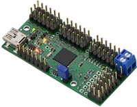
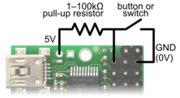
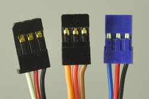

Electronics » Motion Control Modules » RC Servo Controllers »
Mini Maestro 24-Channel USB Servo Controller (Assembled)

|
|||
|
|
|||
The 24-channel Mini Maestro 24 raises the performance bar for serial servo controllers with features such as a native USB interface and internal scripting control. Whether you want the best servo control available (0.25μs resolution with built-in speed and acceleration control and pulse rates up to 333 Hz) or a general I/O controller (e.g. to interface with a sensor or ESC via your USB port), this compact, versatile device will deliver. This fully-assembled version ships with header pins installed.
Compare all products in RC Servo Controllers or Computer Interface or Maestro USB Servo Controllers.
| Description | Specifications (8) | Pictures (27) | Resources (13) | FAQs (6) |
|---|
- How should I attach a button or switch to my Micro Maestro?
 Diagram for connecting a button or switch to the Micro Maestro Servo Controller. First, decide which channel you would like to connect your button or switch to. In the Maestro Control Center, under the Channel Settings tab, change that channel to Input mode and click “Apply Settings”. Next, wire a pull-up resistor (1–100 kilo-ohms) between the signal line of that channel and 5 V so that the input is high (5 V) when the switch is open. Wire the button or switch between the signal line and GND (0 V) so that when the button/switch is active the input will fall to 0 V. The picture to the right shows how to connect a button or switch to channel 0.
You can test your input by toggling the button/switch and verifying that the “Position” variable as shown in the Status tab of the Maestro Control Center reflects the state of your button/switch: it should be close to 255.75 when the button/switch is active and close to 0 when it is inactive. Now you can read the state of the button/switch in your script using the GET_POSITION command or over serial using the “Get Position” command. These commands will return values that are close to 1023 when the button/switch is active and close to 0 when it is inactive. Warning: The Maestro’s I/O lines can only tolerate voltages from 0 to 5 V, so if your power supply is more than 5 V be careful not to connect it to the signal line.- What are the three wires coming out of my servo?
 Most standard radio control servos (and all RC servos we sell) have three wires, each a different color. Usually, they are either black, red, and white, or they are brown, red, and orange/yellow:
- brown or black = ground (GND, battery negative terminal)
- red = servo power (Vservo, battery positive terminal)
- orange, yellow, white, or blue = servo control signal line
Please check the specs for your servo to determine the proper power supply voltage, and please take care to plug the servo into your device in the proper orientation (plugging it in backwards could break the servo or your device).
- Is it possible to use digital servos with the Maestro servo controllers?
- Yes, any servo designed for standard RC receivers should work with the Maestro (and any of our other servo controllers), whether it is a digital or analog servo.
- Can I power my servos with the USB port?
- No. A USB port might only be capable of supplying 100 mA, which is less than what you need for a single servo. Many USB ports can deliver 500 mA, but this is still not enough for typical servos requiring 1 A or more.
- How do I use my Maestro servo controller to get the maximum possible range of motion from my servo?
- Be careful when going past the normal 90-degree range to avoid damaging your servo.
To find the settings in the Maestro Control Center that make your servo rotate as much as it can, first set the Min and Max values on the Channel Settings tab to a wider range. Then use the lowest possible supply voltage at which your servo moves and gradually move the slider on the status tab until the servo does not move any further or you hear the servo straining. Once you reach the limit, immediately move back from it to avoid damaging the servo. Finally, return to the channel settings tab and configure Min and Max so that the servo will never go past the limit.
- Why do servo speed and acceleration limits not work for the first movement after startup or after setting the target to zero?
- When the Maestro first starts up, the servos could be in any
position, and the Maestro has no way of determining what position they
are in. The standard RC servo protocol provides no way to get feedback
from a servo. Therefore, when the Maestro receives its first Set Target
command for a servo, whether it comes from serial, USB or an internal
script, it will not be able to produce a smooth transition from the
current position to the target position and will instead command the
servo to immediately go to the target position. The speed and
acceleration limits will work for subsequent commands since the Maestro
will know where the servo should be and can produce servo pulses that
smoothly change from the current position to the target position.
If you need your servo’s first movement to be controlled by the speed and acceleration limits, then the first Set Target command you send to the Maestro should correspond to the servo’s current position. For example, if you know that your servo will always be at a position of 1500 μs when your system starts up, then your first Set Target command for that servo should have a value of 1500 μs.
Similarly, if you set the target of a servo to zero to make the Maestro stop sending pulses, the Maestro will lose its knowledge of where the servo is. During this time, the servo might slip and go to a different position. If you know your servo is not going to slip, then your program or internal script could remember where the servo is and send a Set Target command with that position in it before trying to move the servo to another position.

Home | Forum | Resources | Wish Lists | Distributors | Ordering Information | BIG Order Form | About | Contact
© 2001–2013 Pololu Corporation